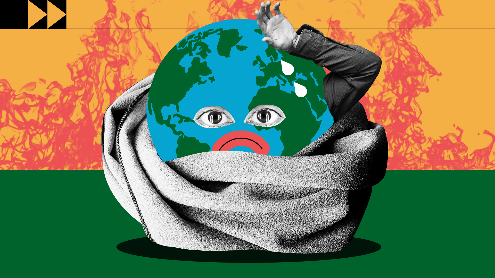

El cambio climático se refiere a los cambios a largo plazo de las temperaturas y los patrones climáticos. Estos cambios pueden ser naturales, por ejemplo, a través de las variaciones del ciclo solar. Pero desde el siglo XIX, las actividades humanas han sido el principal motor del cambio climático, debido principalmente a la quema de combustibles fósiles como el carbón, el petróleo y el gas.
La quema de combustibles fósiles genera emisiones de gases de efecto invernadero que actúan como una manta que envuelve a la Tierra, atrapando el calor del sol y elevando las temperaturas.
Algunos ejemplos de emisiones de gases de efecto invernadero que provocan el cambio climático son el dióxido de carbono y el metano. Estos proceden del uso de la gasolina para conducir un coche o del carbón para calentar un edificio, por ejemplo. El desmonte de tierras y bosques también puede liberar dióxido de carbono. Los vertederos de basura son una fuente importante de emisiones de metano. La energía, la industria, el transporte, los edificios, la agricultura y el uso del suelo se encuentran entre los principales emisores.
